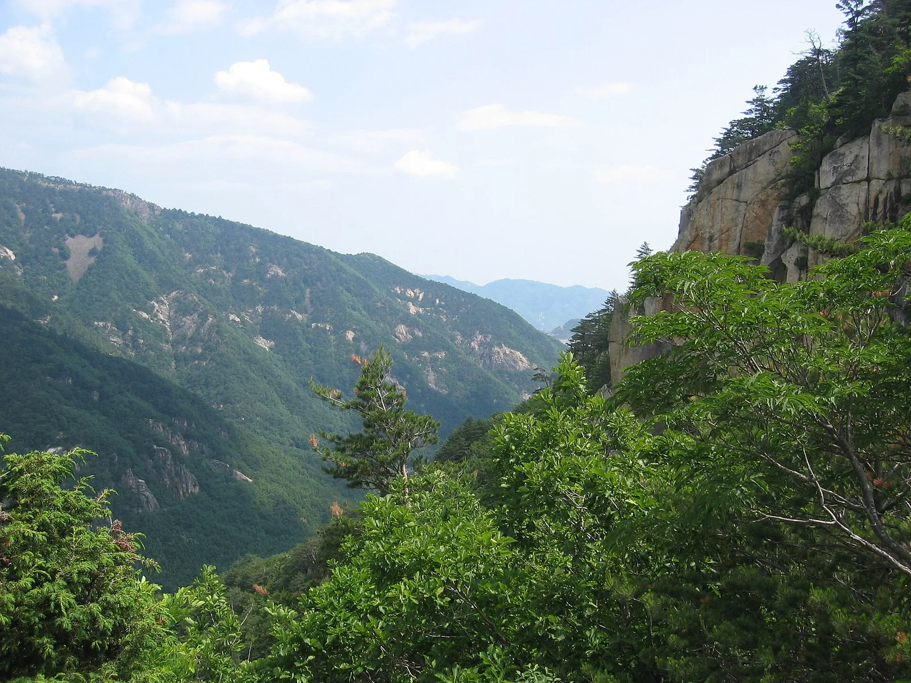
▲ 두타산 자락의 암벽과 골짜기. 베틀바위 산성길은 이 산의 중턱을 한 바퀴 돈다 사진=Wikimedia Commons (eimoberg, CC BY 2.0)
1. 2020년에야 열린 길, 왜 '한국의 장가계'인가
강원 동해시 무릉계곡의 '베틀바위 산성길'은 2020년 8월 1일 처음 열린 등산로다. 무릉계곡관리사무소에서 박달계곡으로 이어지는 등산로 4.7km 가운데 관리사무소~두타산성 입구 2.7km 구간을 먼저 개방했다. 오랫동안 일반 등산객이 드나들지 못하던 두타산 중턱이 이때 처음 열렸다. 이어 2021년 6월에는 베틀바위에서 협곡 전망대 '마천루'를 지나 용추폭포로 내려오는 구간이 연결돼 한 바퀴 도는 코스가 완성됐다.
'한국의 장가계'라는 별명은 베틀바위 일대의 뾰족한 암봉에서 나왔다. 동해시 관광 안내에 따르면 베틀바위는 해발 550m에 있으며, 베틀처럼 생겼다 해서 이름이 붙었다. 산악인들 사이에서는 '베틀릿지 비경', '천하비경 장가계', '소금강'으로 불린다. 하늘나라 질서를 어긴 선녀가 인간 세상에 내려와 비단 세 필을 짜고 올라갔다는 전설도 전한다.
무릉계곡은 두타산과 청옥산 사이에 자리한 계곡으로, 1977년 국민관광지 제1호로, 2008년 2월 5일 명승 제37호(동해 무릉계곡)로 지정됐다. 국가유산청 국가유산포털은 이 명승의 관리자를 동해시로 적고 있고, 현장 운영(매표·주차·야영장)은 국립공원공단이 아니라 동해시시설관리공단이 맡는다. 2021년 마천루 구간 순환 등산로는 동해시와 동부지방산림청이 공동 산림사업으로 조성했다. 두타산은 국립공원이 아니어서 입장료와 주차료, 운영 방식이 국립공원과 다르다. 이 점은 아래 요금표에서 다시 정리한다.
2. 가는 법과 주차 — 동해IC에서 42번 국도로
자가용이라면 동해고속도로 동해IC에서 빠져나와 7번 국도를 타고 삼척 방향으로 내려가다가, 효가사거리에서 정선 방향으로 우회전해 42번 국도로 들어가면 된다. 삼화교삼거리에서 좌회전하면 무릉계곡 주차장이 나온다. 동해시시설관리공단이 안내하는 경로다. 바닷가를 따라 달리는 7번 국도에서 내륙으로 잠깐 방향을 트는 구간이라, 해안 드라이브와 묶기 쉽다. 7번 국도를 따라 동해안을 달리는 코스는 7번 국도 드라이브 코스 기사에서 따로 정리했다.
무릉계곡 주차장은 4개소(제1·2·3주차장과 임시주차장), 면적 13,636㎡에 총 648대를 댈 수 있다. 주차료는 소형 2,000원, 대형 5,000원이다. 경차(1,000cc 이하)와 동해시 등록 차량은 50% 감면된다. 주차료는 한 번 내는 방식으로 안내돼 있으며, 시간제 요금은 공단 안내에 없다.
| 구분 | 개인 | 단체(20인 이상) |
|---|---|---|
| 어른 | 4,000원 | 3,000원 |
| 청소년·군인 | 1,500원 | 1,000원 |
| 어린이 | 700원 | 500원 |
| 65세 이상 | 1,500원 | 1,000원 |
| 주차 소형 | 2,000원 (경차·동해시 등록 차량 50% 감면) | |
| 주차 대형 | 5,000원 | |
군인 요금은 병장 이하 병사에게 적용된다. 6세 이하 어린이, 국가유공자 등은 신분증을 보여주면 무료로 입장할 수 있고, 선거 투표확인증을 내면 해당 선거일 후 3개월까지 무료다. 국군의 날에 입장하는 군인, 어린이날에 입장하는 어린이도 무료다. 예전 안내물에는 어른 2,000원으로 적힌 곳이 아직 남아 있으니, 현재 요금은 공단 홈페이지 기준으로 보는 것이 맞다.
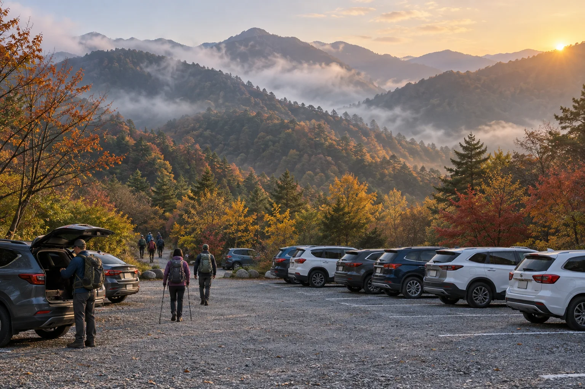
▲ 해가 막 떠오르는 산 아래 주차장. 배낭을 멘 등산객들이 차에서 내려 산길로 향한다 이미지=AI 생성
대중교통은 동해시종합버스터미널 근처(동해감리교회 앞)에서 111번 버스를 타고 무릉계곡 정류장에서 내리면 된다. 한국관광공사 두루누비와 대한민국 구석구석이 함께 안내하는 방법이다.
🚗 운전자 체크 포인트
주차 대수는 648대로 적지 않지만, 단풍철 주말에는 등산객과 계곡 나들이객이 한꺼번에 몰린다. 주차 혼잡을 공식 집계한 자료는 없으니, 가급적 오전 이른 시간에 도착하는 편이 안전하다. 순환 코스에만 3시간 안팎이 걸리므로 늦게 출발하면 하산이 해질녘과 겹칠 수 있다. 무릉계곡 이용시간은 두루누비에 하절기 09:00~20:00, 동절기 09:00~18:00으로 안내돼 있지만, 같은 페이지의 요금 정보가 옛 기준이어서 입장 가능 시간은 관리사무소(033-539-3700~1)에 방문 전 확인할 것을 권한다.
3. 코스 한눈에 — 베틀바위 왕복부터 마천루 순환까지
베틀바위 산성길은 체력과 시간에 따라 세 갈래로 골라 걸을 수 있다. 공식 기관이 내놓은 거리·시간을 기준으로 정리하면 다음과 같다.
| 코스 | 경로 | 거리·시간 | 출처 |
|---|---|---|---|
| 베틀바위 왕복 | 관리사무소→베틀바위 전망대→같은 길로 하산 | 초보자 기준 오르막만 1시간 30분~2시간 | 대한민국 구석구석 |
| 산성길 순환 | 관리사무소→베틀바위 전망대→미륵바위→산성터→산성12폭포→학소대→삼화사→관리사무소 | 6.4km, 약 3시간, 난이도 보통 | 두루누비(한국관광공사) |
| 마천루 연결 순환 | 베틀바위→수도골→박달령 입구→(마천루)→용추폭포·쌍폭포→계곡길 하산 | 동해시가 조성한 순환 등산로 총연장 5.34km | 동해시 준공 발표(2021) |
세 번째 코스의 5.34km는 동해시가 2021년 '두타산 협곡 마천루' 조성사업으로 정비한 순환 등산로 길이다. 관리사무소에서 베틀바위까지 오르는 길과, 용추폭포에서 관리사무소로 내려오는 계곡길은 포함하지 않은 수치로 봐야 한다. 동해시·관리사무소·한국관광공사 어디에도 마천루를 포함한 주차장 원점회귀 소요 시간을 공식적으로 밝힌 자료는 찾지 못했다. 등산객 후기에는 4~6시간으로 적힌 경우가 많지만 개인 기록이다. 두루누비 순환 코스(3시간)보다 길어지는 만큼, 휴식 시간을 넣어 넉넉하게 잡는 것이 좋다.
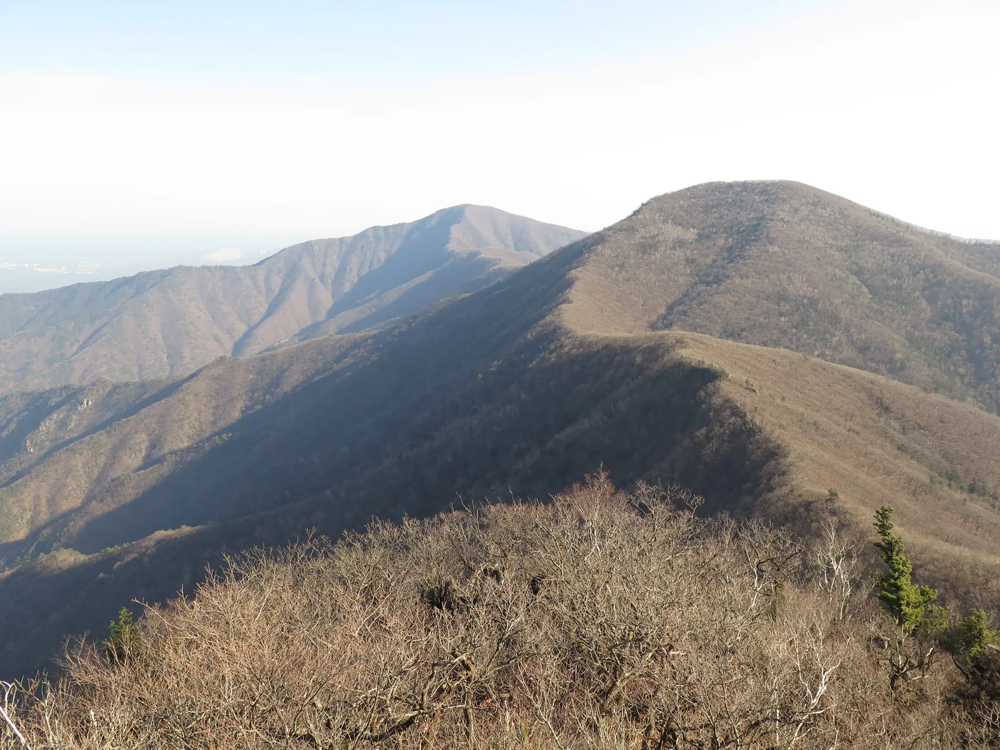
▲ 2020년 11월 초 고적대 부근에서 바라본 청옥산(앞)과 두타산 능선. 무릉계곡은 이 두 산 사이 골짜기에 있다 사진=Wikimedia Commons (EZHO, CC BY-SA 4.0)
4. 구간별로 걸어보면 — 금강송 쉼터에서 용추폭포까지
관리사무소에서 베틀바위 전망대까지는 쉬지 않고 오르는 길이다. 대한민국 구석구석 여행기사는 이 구간을 "초보자에게는 만만치 않은 길"이라고 소개한다. 오르는 길에는 이야깃거리가 있는 지점이 차례로 나온다. 금강송 군락 사이에 만든 '휴휴명상쉼터', 조상들이 참나무로 숯을 굽던 숯가마 터, 33만여㎡에 이르는 회양목 군락지가 이어진다. 마지막 오르막에는 까마득한 나무 계단이 기다린다. 계단을 다 오르면 베틀바위 전망대에서 뾰족한 암봉들을 정면으로 볼 수 있다.
전망대에서 더 올라가면 보는 각도에 따라 모양이 달라진다는 미륵바위를 지나 두타산성 터에 닿는다. 여기서 두루누비 순환 코스는 산성12폭포와 학소대를 거쳐 삼화사 쪽으로 내려온다. 마천루까지 가려면 수도골·박달령 입구 방향으로 이어간다. 동해시 설명에 따르면 협곡 전망대 마천루에서는 건너편 신선봉과 용추폭포를 마주 볼 수 있다. 이 일대는 조선 신광한의 소설집 『기재기이』의 배경으로도 알려져 있다.
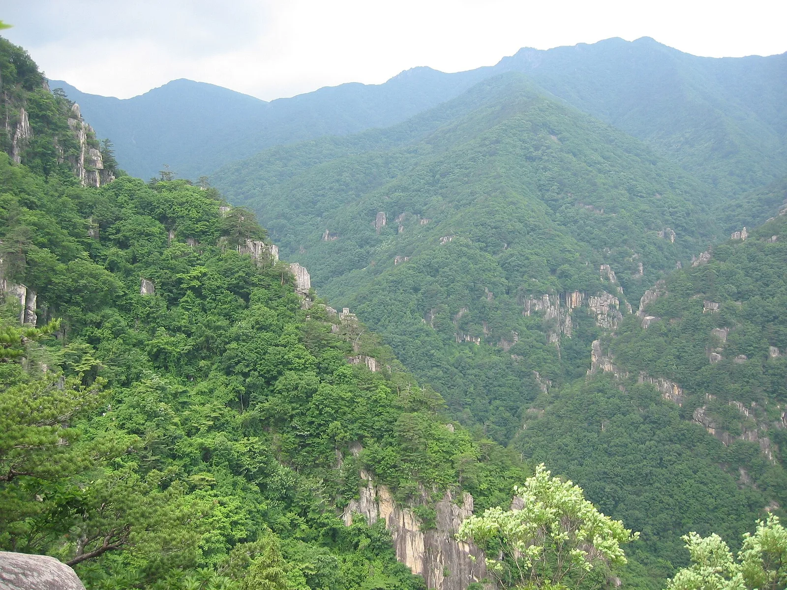
▲ 두타산 일대의 겹겹이 이어진 능선. 산비탈 곳곳에 바위 절벽이 드러나 있다 사진=Wikimedia Commons (eimoberg, CC BY 2.0)
하산길에서 만나는 폭포 두 곳이 이 코스의 마무리다. 쌍폭포는 두타산~청옥산 능선에서 흘러온 물줄기와 청옥산~고적대 능선에서 흘러온 물줄기가 한곳에서 만나 떨어지는 폭포다. 용추폭포는 물이 바위를 깎아 만든 폭포로, 위에서부터 상탕·중탕·하탕으로 나뉜다. 동해시는 상탕과 중탕이 옹기 항아리 모양이고, 하탕은 짙은 옥색의 큰 용소를 이룬다고 소개한다.
계곡길로 내려오면 무릉반석과 삼화사를 지난다. 무릉반석은 금란정 위쪽에서 삼화사 입구까지 이어지는 1,500평가량의 너른 바위로, 옛 문인들이 새긴 석각이 곳곳에 남아 있다. 그중 '무릉선원 중대천석 두타동천(武陵仙源 中臺泉石 頭陀洞天)' 12자가 대표적이다. 동해시는 글씨가 닳는 것을 막기 위해 1995년 모형 석각을 따로 만들어 보존하고 있다.
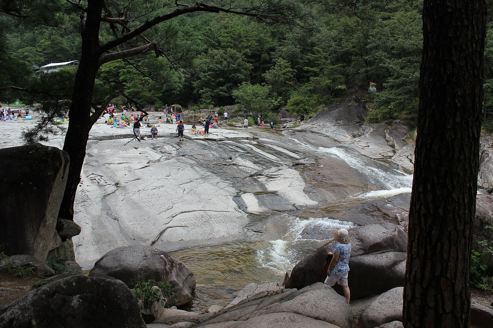
▲ 무릉계곡의 너른 화강암 반석. 여름철 계곡물이 반석 위를 얕게 흐르고 방문객들이 곳곳에서 쉬고 있다 사진=Wikimedia Commons (칼빈500, CC BY-SA 4.0)
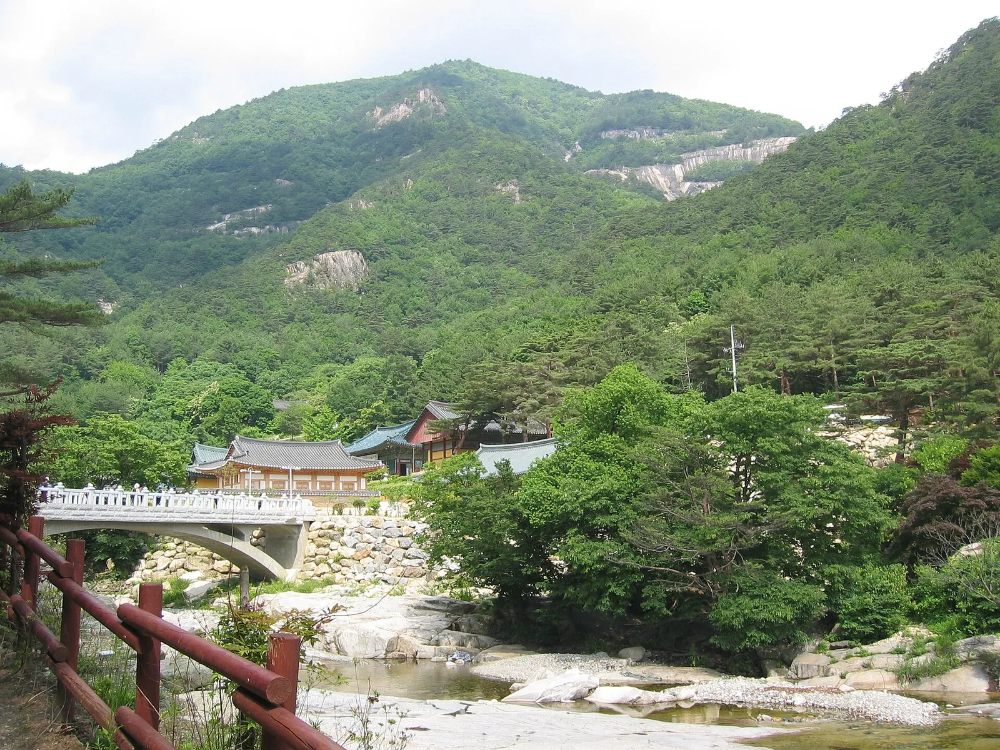
▲ 두타산 아래 계곡 옆에 자리한 삼화사. 신라 선덕여왕 11년(642) 창건 기록이 전하는 고찰로, 코스 끝자락에서 지난다 사진=Wikimedia Commons (eimoberg, CC BY 2.0)
짧게 계곡만 걷고 싶다면 동해시시설관리공단이 안내하는 계곡 코스도 있다. 관리사무소→삼화사→학소대→관음폭포→옥류동(편도 25분), 관리사무소→옥류동→선녀탕→쌍폭포·용추폭포(편도 40분), 관리사무소→옥류동→두타산성 입구→두타산성(편도 50분), 관리사무소→삼화사→관음암(편도 50분) 등 네 가지다. 베틀바위가 부담스러운 동행이 있다면 쌍폭포·용추폭포 코스로 나눠 걷고 폭포 앞에서 만나는 방법도 있다.
5. 계절 팁 — 단풍 시기, 그리고 산불조심기간
산림청은 올해 단풍 절정을 10월 하순으로 내다봤다. 산림청 예측에서 설악산 절정은 10월 20일, 속리산은 10월 28일이다. 최근 5년 평균보다 0.8일가량 늦다. 두타산은 예측 대상 산에 들어 있지 않다. 위도상 설악산보다 남쪽이라는 점을 감안하면, 10월 하순 전후를 기준으로 잡고 출발 전 현지 소식을 확인하는 것이 현실적이다. 같은 산이라도 베틀바위가 있는 중턱이 계곡 바닥보다 먼저 물든다. 단풍이 고도와 위도에 따라 어떻게 내려오는지는 가을 단풍 드라이브 시기 기사에 정리해 두었다.
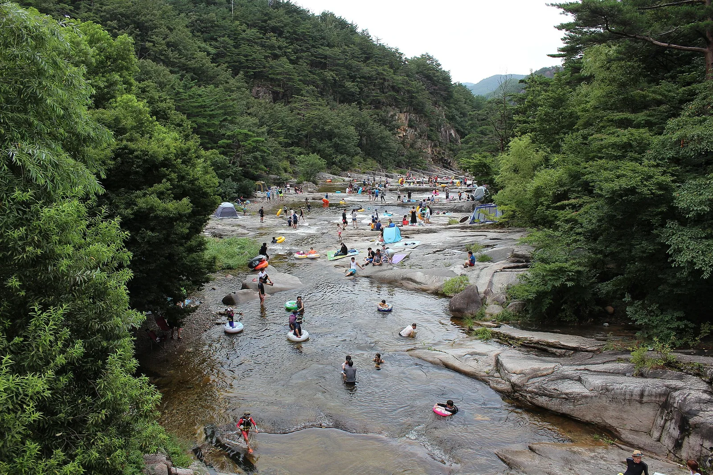
▲ 여름철 무릉계곡. 짙은 녹음 사이로 넓은 바위 계곡이 이어지고 방문객들이 물놀이를 즐기고 있다 사진=Wikimedia Commons (칼빈500, CC BY-SA 4.0)
가을 산행에서 날짜만큼 중요한 것이 산불조심기간이다. 중부지방산림청에 따르면 가을철 산불조심기간은 따로 조정하지 않는 한 매년 11월 1일부터 12월 15일까지이며, 올해 2월 1일 시행된 산림재난방지법 시행령에도 이 기간이 명시돼 있다. 다만 산림청장이나 지자체장이 기상·지역 여건에 따라 기간을 앞당길 수 있다. 실제로 지난해(2025년) 가을철 기간은 10월 20일부터 12월 15일까지 57일간이었고, 올해 봄철 기간도 2월 1일에서 1월 20일로 당겨 시작했다. 이 기간에는 지자체가 입산통제구역과 폐쇄 등산로를 따로 지정하고, 라이터·버너 등 화기를 가지고 산에 들어가는 것도 금지된다. 올해 가을철 기간을 앞당길지, 동해시가 두타산·청옥산 일대 등산로를 통제 대상에 넣을지는 기사 작성 시점(9월 26일)까지 공고가 확인되지 않았다. 10월 중순 이후 방문한다면 무릉계곡관리사무소나 동해시청 관광과에 등산로 개방 여부를 먼저 확인해야 헛걸음을 피할 수 있다. 강풍·호우 등 기상 상황에 따라 등산로가 임시로 통제될 수도 있다.
6. 산에서 바다로 — 추암 촛대바위와 묵호 논골담길
동해 여행의 장점은 산과 바다가 가깝다는 데 있다. 오전에 베틀바위를 다녀와 오후에 바다로 나가는 일정이 무리 없이 짜인다. 무릉계곡으로 들어올 때 지났던 7번 국도로 다시 나가면 해안 명소에 닿는다.
추암 촛대바위는 동해시와 삼척시 경계 해안에 있다. 애국가 첫 소절 배경 화면으로 알려진 곳으로, 바위에 해가 걸리는 일출 풍경이 유명하다. 한국관광공사 '한국의 가볼만한곳 10선'에 선정된 해돋이 명소다(위치: 동해시 촛대바위길 28, 추암관광안내소 033-530-2801). 산행 다음 날 새벽 일출을 보고 돌아가는 1박 일정이면 두 곳을 모두 여유 있게 볼 수 있다.
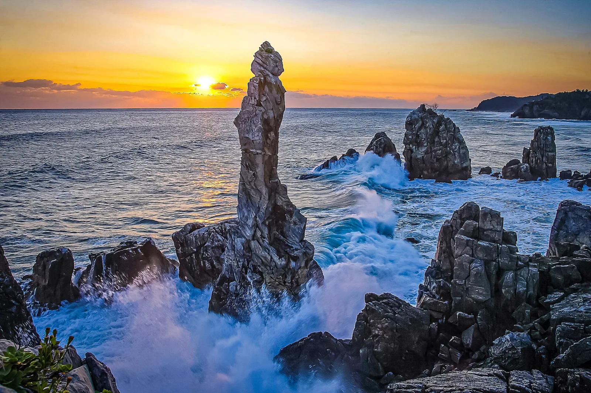
▲ 해 뜰 무렵의 추암 촛대바위. 가늘게 솟은 바위 기둥 주변 암초에 파도가 부서진다 사진=동해시 (공공누리 제1유형, Wikimedia Commons)
묵호 논골담길은 1941년 개항한 묵호항 뒤편 언덕마을의 골목길이다. 뱃사람들과 시멘트·무연탄 공장 노동자들이 모여 살던 동네로, 2010년 동해문화원의 '묵호등대 담화마을' 프로젝트에 지역 어르신과 예술가들이 참여하면서 지금의 벽화 골목이 됐다. 논골1길·2길·3길과 등대오름길 네 갈래가 모두 묵호등대(동해시 해맞이길 289)로 이어진다. 골목마다 주제가 다르다. 1길에는 오징어·명태잡이로 번성하던 시절의 생업이, 2길에는 골목에서 놀던 아이들과 동네의 일상이, 3길에는 집안의 이야기가 그려져 있다. 골목은 좁고 가파르다. 차는 묵호항 쪽에 세우고 걸어 올라가는 편이 낫다.
▲ 어선이 줄지어 선 묵호항과 뒤편 언덕마을. 논골담길은 이 언덕을 따라 묵호등대까지 오른다 사진=한국관광공사 조영권 (공공누리 제1유형, Wikimedia Commons)
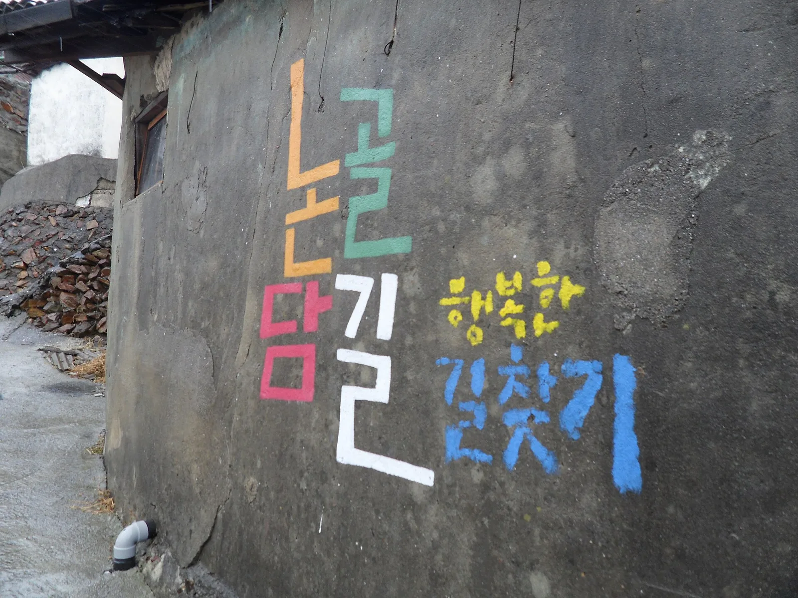
▲ 마을 어귀 담벼락에 알록달록하게 쓰인 '논골담길' 글씨 사진=Wikimedia Commons (이다미, CC BY-SA 3.0)
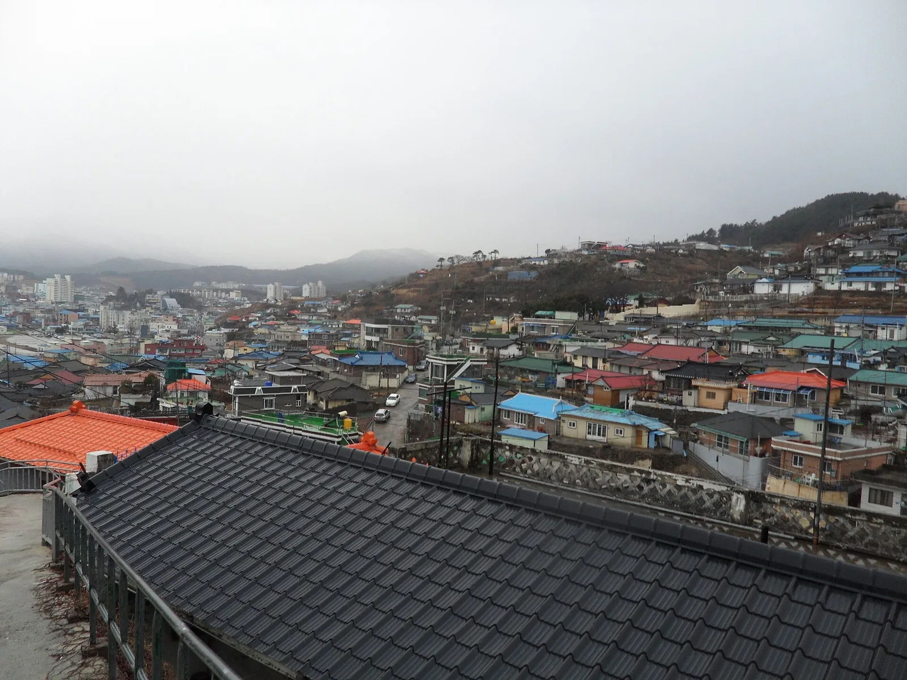
▲ 언덕을 따라 집들이 옹기종기 모여 있는 묵호 마을 전경 사진=Wikimedia Commons (이다미, CC BY-SA 3.0)
아이와 함께라면 무릉계곡과 같은 삼화동에 있는 무릉별유천지도 선택지다. 1968년부터 50여 년간 석회석을 캐던 광산을 관광지로 바꾼 곳으로, 스카이글라이더·알파인코스터 같은 체험시설과 라벤더정원, 청옥호·금곡호가 있다. 운영시간은 09:30~17:30(매표 마감 16:30), 매주 월요일 휴무(공휴일이면 다음 날)다. 입장료는 성수기(6~9월) 성인 6,000원, 비수기(10월~5월) 성인 4,000원·어린이·청소년 2,000원이다. 체험시설 요금은 따로 받는다. 유료 주차장 2곳이 있고 주차료는 소형 2,000원, 대형 5,000원(동해시민 50% 감면)이다. 식사는 무릉계곡 명승지 안 향토음식촌에서 산채비빔밥·더덕구이·황기백숙·감자전 같은 산골 메뉴로 해결할 수 있다.
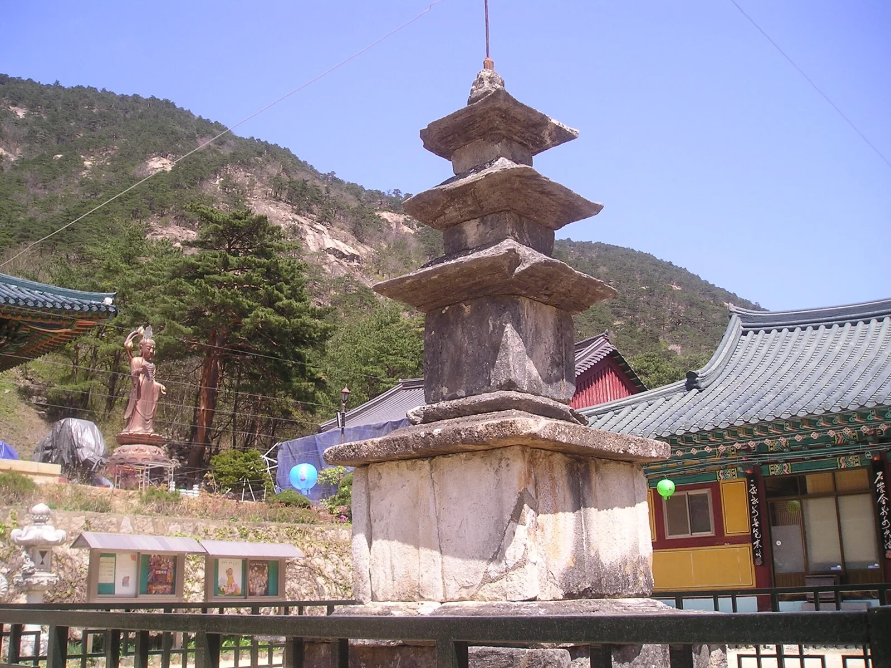
▲ 삼화사 경내의 삼층석탑. 뒤로 두타산 자락이 이어진다 사진=Wikimedia Commons (콩가루, CC BY-SA 4.0)
7. 하루 코스로 짜면
이른 아침 무릉계곡 주차장에 차를 대고 베틀바위 전망대까지 오른다. 체력이 되면 미륵바위와 두타산성, 마천루를 거쳐 쌍폭포·용추폭포로 내려온다. 무릉반석과 삼화사를 지나 주차장으로 돌아오면 점심 무렵이 된다. 향토음식촌에서 점심을 먹은 뒤 42번 국도와 7번 국도를 거쳐 묵호항으로 이동해 논골담길을 걷는다. 1박을 한다면 다음 날 새벽 추암 촛대바위에서 일출을 보고 돌아가면 된다. 반대로 서울에서 당일로 다녀온다면 산행은 두루누비 순환 코스(6.4km) 정도로 줄이고, 바다는 한 곳만 고르는 것이 무리가 없다.
✅ 출발 전 확인할 것
· 입장료 어른 4,000원, 주차료 소형 2,000원(경차 50% 감면) — 현금·카드 결제 가능 여부는 현장 확인
· 입장 가능 시간과 산불조심기간 등산로 통제 여부는 무릉계곡관리사무소(033-539-3700~1)에 확인
· 베틀바위 전망대 직전 가파른 나무 계단 — 등산화와 스틱 준비, 물은 넉넉히
· 순환 코스만 약 3시간, 마천루까지 넣으면 더 길어진다 — 오전 일찍 출발
· 가을철 산불조심기간은 기본 11월 1일부터(앞당겨질 수 있음) — 동해시 입산통제 고시 확인
· 단풍 절정은 10월 하순 전후 예상 — 출발 직전 현지 단풍 소식 확인
· 산에 들어갈 때 라이터·버너 등 화기 반입 금지